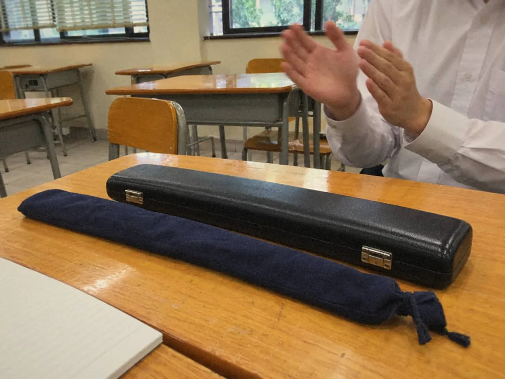
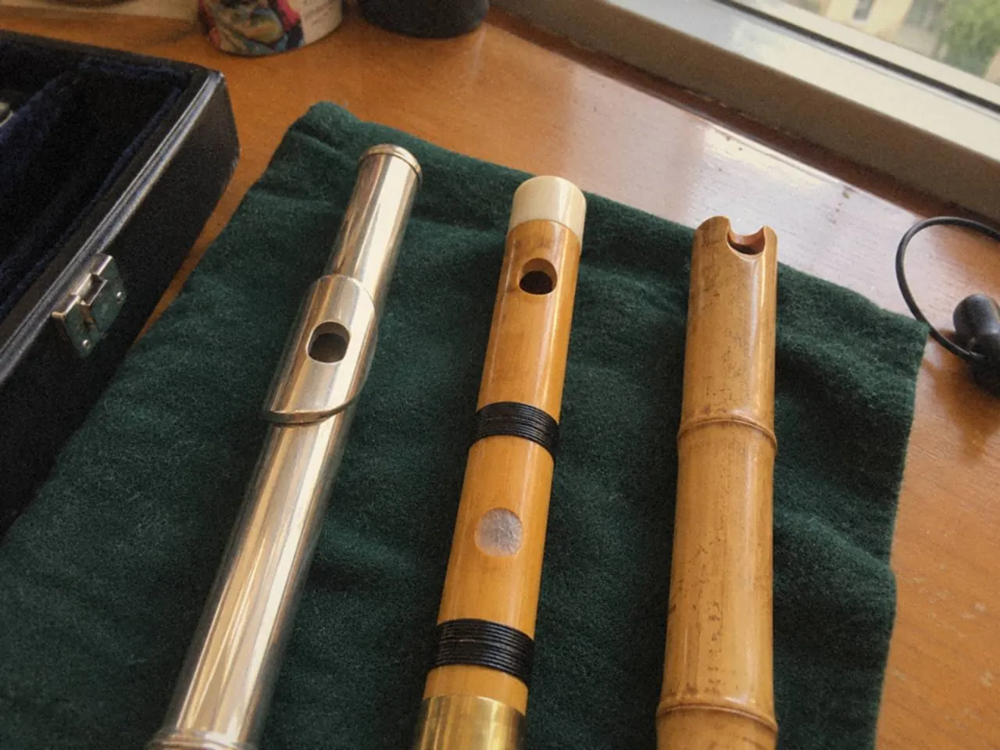

長笛、笛子和簫可以共用節奏、讀譜和聆聽經驗，發聲、指法和考級制度卻不同。規劃時先分清可以轉用的能力和要重新學的動作，每種樂器再各開一張清單。

兩種樂器各練各的，同一類問題容易在兩邊重複出現。你在長笛上趕拍，換到笛子多半也趕。把共同的部分抽出來一起練，省下來的時間才用得到各自的基本功上。
長笛、笛子與簫共用甚麼？
共同訓練的主軸有四條：氣息、節奏、聽覺和樂句。讀譜和聆聽的經驗同樣可以轉用。
要看出哪些真的共用，可以把同一個節奏先拍手，再分別放進不同樂器的容易音域，觀察哪些地方跟得上，哪些地方走樣。走樣的位置，通常就是該樂器自己的功課。

如果同一個問題在幾首曲、幾件樂器都出現，就回頭找源頭，先圈出一個可重複檢查的位置。每星期回頭看一次，弱項表、音階、視奏和錄音都用得上，不用把整段重吹。
共同練習用來幫助理解，不能省略各自的基本功。
換樂器時，甚麼要重新檢查？
吹口、持握和指法，每次換都要重新看。身體會沿用上一件樂器的習慣，而那些習慣未必合適。

長笛的方法不能直接套入竹笛或洞簫。氣息同樣是主軸，發聲的做法卻各有不同，要跟着該樂器的老師和教材走。
三件樂器的分別可再讀笛子、洞簫、南簫：怎樣分、怎樣選。
先考哪一件？
考級規劃要為每種樂器建立獨立清單，逐項核對制度和曲目要求，然後才安排共同練習。能力可以互相支持，行政和技術細節卻不能靠類比決定。長笛那套規則，不一定適用於竹笛或簫。
清單排好之後，比較兩邊。哪一件的基本聲音和完整流程較穩，就可以先排。
另一件未準備好，也不必為了湊同一年而勉強；曲目、音階和模擬的進度可以各走各的，判斷方法見考級路線圖。
時間有限時，共同部分放在一起練，換樂器的時段只做該樂器獨有的事，例如吹口、持握和指法。
常見問題
學過長笛，學笛子會較快嗎？
節奏、讀譜和聆聽的經驗可以轉用，吹口、持握和指法要重新學。不要把長笛方法直接套用。
同一年可以考兩種樂器嗎？
要看兩邊的制度、要求和準備程度。先各開一張清單，核對後與老師商量，規則以考試機構現行公布為準。
笛子和長笛的考試規則一樣嗎？
不能當作一樣。各項考試要求要獨立核對，竹笛等其他考級制度另有自己的要求。
這星期找一個節奏，先拍手，再放進兩件樂器的容易音域，寫下哪件先走樣。